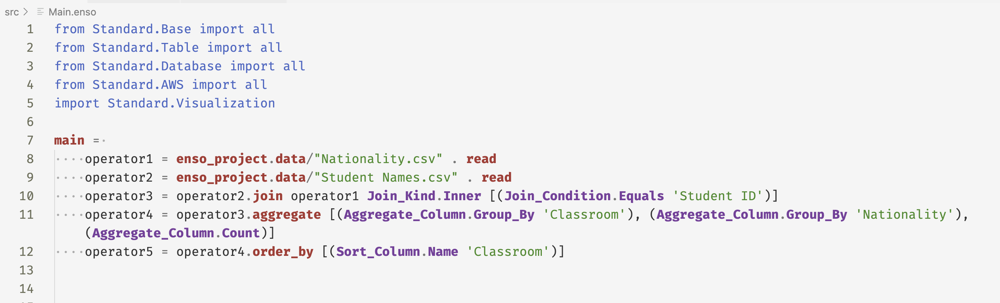
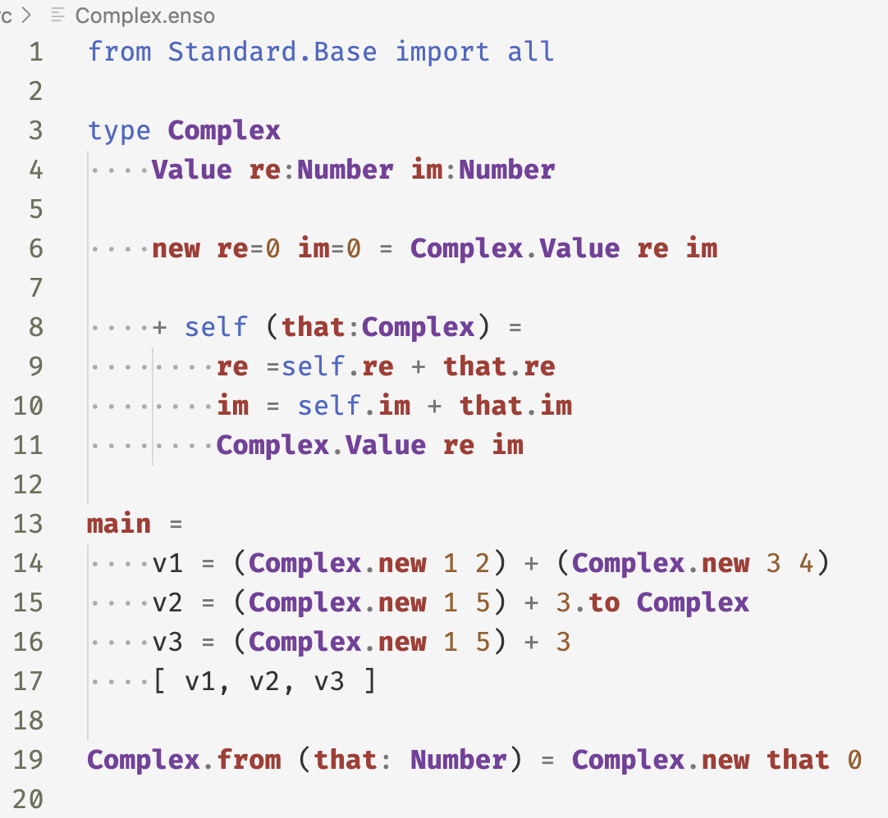
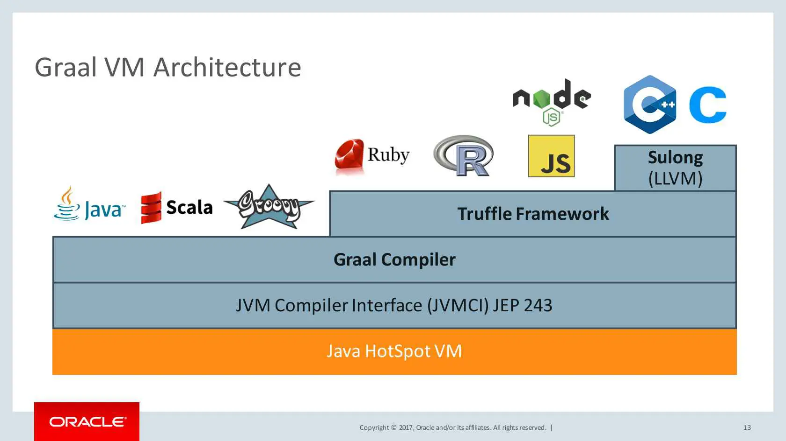
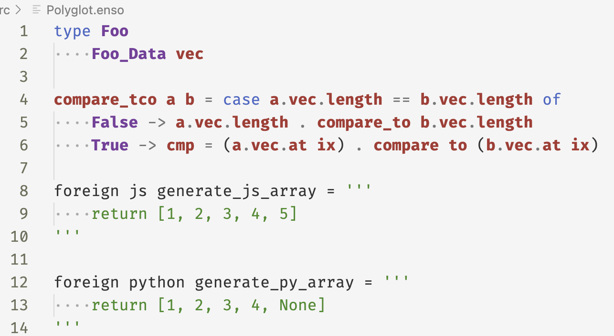
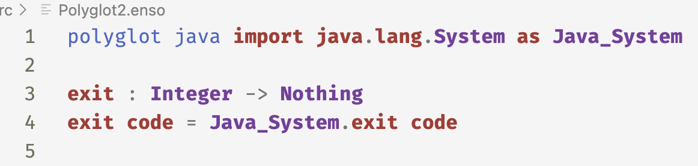
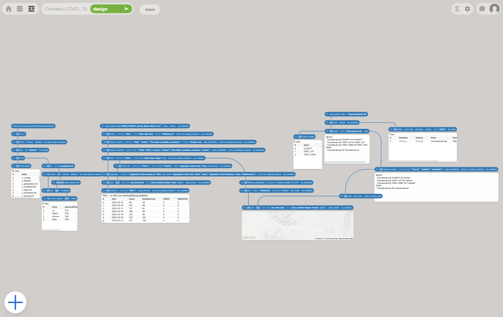
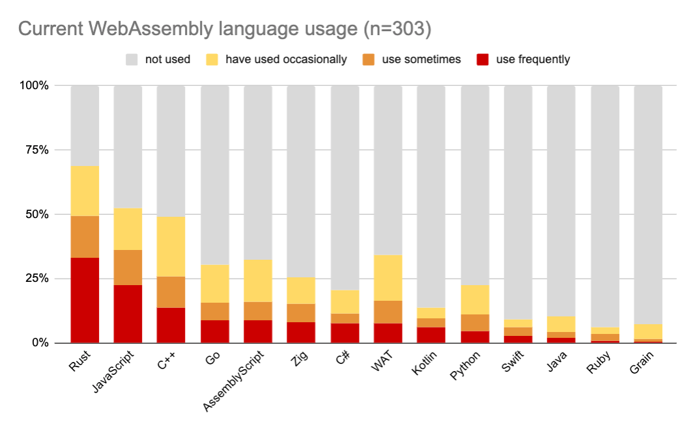
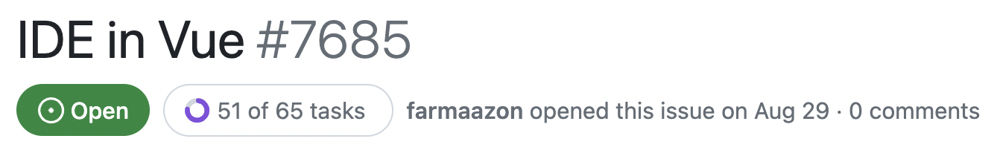

Как (не) написать фронтенд на Rust
О себе
Кто мы и что делаем
Как можно написать фронтенд на Rust?
Как можно не написать фронтенд на Rust?
Конец?
Проблема
Решение
Enso Language
Текстовое + визуальное представление
Функциональный
GraalVM
https://rieckpil.de/whatis-graalvm/
Polyglot
 Enso IDE
Требования к техническому стеку
- Гибкость и кастомизируемость UI
- Производительность
- Кроссплатформенность
Кто мы и что делаем
Как можно написать фронтенд на Rust?
Как можно не написать фронтенд на Rust?
Конец?
WebAssembly (WASM)
- Стандарт виртуальной машины и байт-кода к ней
- Работает во всех современных браузерах
- Быстрый
- Безопасный
- Нет прямого доступа к ОС и DOM
Rust — самый популярный язык для WASM
 https://blog.scottlogic.com/2023/10/18/the-state-of-webassembly-2023.htmlDOM

// Get the element with id "myElement"
let element = document.getElementById("myElement");
// Change the text content of the element
element.textContent = "Hello, World!";
// Change the background color of the element
element.style.backgroundColor = "blue";
Canvas
function draw() {
const canvas = document.getElementById("canvas");
if (canvas.getContext) {
const ctx = canvas.getContext("2d");
ctx.beginPath();
ctx.arc(75, 75, 50, 0, Math.PI * 2, true); // Outer circle
ctx.moveTo(110, 75);
ctx.arc(75, 75, 35, 0, Math.PI, false); // Mouth (clockwise)
ctx.moveTo(65, 65);
ctx.arc(60, 65, 5, 0, Math.PI * 2, true); // Left eye
ctx.moveTo(95, 65);
ctx.arc(90, 65, 5, 0, Math.PI * 2, true); // Right eye
ctx.stroke();
}
}
WebGL 
- Огрызок OpenGL ES
- Порядком устарел
- Шейдеры

Архитектура

Парсер
- Scala → Rust
- 100 Мб → 4 Мб
- fn parse(string: &str) -> Result<Ast>
- JNI-обертка для использования в бекенде
SDF (Signed Distance Function)
\[ f(x) = \begin{cases} -d(x, \partial \Omega) & \text{if }\, x \in \Omega \\ d(x, \partial \Omega) & \text{if }\, x \in \Omega^c \end{cases} \]
float sdCircle( vec2 p, float r )
{
return length(p) - r;
}
float sdBox( in vec2 p, in vec2 b )
{
vec2 d = abs(p)-b;
return length(max(d,0.0)) + min(max(d.x,d.y),0.0);
}
float sdMoon(vec2 p, float d, float ra, float rb )
{
p.y = abs(p.y);
float a = (ra*ra - rb*rb + d*d)/(2.0*d);
float b = sqrt(max(ra*ra-a*a,0.0));
if( d*(p.x*b-p.y*a) > d*d*max(b-p.y,0.0) )
return length(p-vec2(a,b));
return max( (length(p )-ra),
-(length(p-vec2(d,0))-rb));
}
/// Local scope section button. A dot inside a circle.
pub mod local_scope(LocalScope) {
ensogl_core::define_shape! {
alignment = center;
(style: Style) {
let dull_alpha: Var<f32> = style.get_number(dull_color_alpha).into();
let dull_color = &VIVID_COLOR * &dull_alpha;
let dot = Circle(3.0.px());
let dot = dot.fill(VIVID_COLOR.glsl());
let outer = Circle(8.0.px()) - Circle(5.0.px());
let outer = outer.fill(dull_color.glsl());
let shape = outer + dot;
shape.into()
}
}
}
/// A road cone.
pub mod unstable(Unsable) {
ensogl_core::define_shape! {
alignment = center;
(style: Style) {
let x_radius = 8.0;
let y_radius = x_radius * 0.465;
let bottom = Ellipse(x_radius.px(), y_radius.px());
let bottom_pos_y = -SIZE / 2.0 + y_radius;
let bottom = bottom.translate_y(bottom_pos_y.px());
let bottom_center = Ellipse(5.0.px(), 2.0.px()).translate_y((-3.0).px());
let height = 12.5;
let y_offset = height / 2.0 - 3.0;
let bottom_triangle = Triangle(10.0.px(), height.px()).translate_y(y_offset.px());
let bottom_mask = bottom_center + bottom_triangle;
let bottom = bottom - bottom_mask;
let x_radius = 4.0;
let y_radius = 1.5;
let middle = Ellipse(x_radius.px(), y_radius.px());
let middle_pos_y = -0.5;
let middle = middle.translate_y(middle_pos_y.px());
let height = 10.0;
let y_offset = middle_pos_y + height / 2.0;
let middle_triangle = Triangle(8.0.px(), height.px()).translate_y(y_offset.px());
let middle = middle + middle_triangle;
let mask_y = middle_pos_y + 2.5;
let mask = HalfPlane().translate_y(mask_y.px());
let mask_ellipse = Ellipse(3.0.px(), 1.0.px()).translate_y(mask_y.px());
let mask = mask + mask_ellipse;
let middle = middle - mask;
let height = 5.5;
let top_pos_y = middle_pos_y + 4.5;
let y_offset = top_pos_y + height / 2.0;
let top_triangle = Triangle(4.4.px(), height.px()).translate_y(y_offset.px());
let triangle_mask = HalfPlane().translate_y((SIZE / 2.0 - 1.0).px());
let top_triangle = top_triangle - triangle_mask;
let top_ellipse = Ellipse(2.2.px(), 0.4.px()).translate_y(top_pos_y.px());
let top = top_triangle + top_ellipse;
let shape = bottom + middle + top;
let shape = shape.fill(VIVID_COLOR.glsl());
shape.into()
}
}
}
// A lot of lines of code…
bool _3286 = mod(input_local.x, input_size.x * 0.5) < (input_size.x * 0.25);
bool _3294 = mod(input_local.y, input_size.y * 0.5) < (input_size.y * 0.25);
bool _3298 = _3286 || _3294;
bool _3305;
if (_3298)
{
_3305 = !(_3286 && _3294);
}
else
{
_3305 = _3298;
}
output_color = mix(vec4(0.0, 0.0, 0.0, 1.0), vec4(1.0, 0.0, 0.0, 1.0), bvec4(_3305));
FRP
(Functional Reactive Programming)
ensogl_core::define_endpoints! {
Input {
set_size (Vector2),
mouse_nearby (bool),
click (),
}
Output {
clicked (),
is_hovered (bool),
state (State),
size (Vector2),
}
}
// === Remove node ===
frp::extend! { network
all_nodes <= inputs.remove_all_nodes.map(f_!(model.nodes.keys()));
selected_nodes <= inputs.remove_selected_nodes.map(f_!(model.nodes.all_selected()));
nodes_remove <- any (all_nodes, selected_nodes);
out.node_removed <+ nodes_to_remove;
}
Кто мы и что делаем
Как можно написать фронтенд на Rust?
Как можно не написать фронтенд на Rust?
Конец?
Многословность
document.getElementById("mousemoveme").onmousemove = (e) => {
var rect = e.target.getBoundingClientRect();
var x = e.clientX - rect.left;
var y = e.clientY - rect.top;
console.log(`Mouse position: (${x}, ${y})`);
}
use wasm_bindgen::{prelude::*, JsCast};
use web_sys::{console, Document, HtmlElement, MouseEvent};
let mousemove = Closure::<dyn Fn(MouseEvent)>::wrap(Box::new(|e| {
let rect = e
.target()
.expect("mouse event doesn’t have a target")
.dyn_into::<HtmlElement>()
.expect("event target should be of type HtmlElement")
.get_bounding_client_rect();
let x = (e.client_x() as f64) - rect.left();
let y = (e.client_y() as f64) - rect.top();
console::log_1(&format!("Left: {x}, Top: {y}"));
}));
Пересборка
- 20–30 секунд на каждую пересборку
- Демо-сцены
./run gui watch --crate-path=app/gui/demo/iconsОтладка
Процесс починки бага
- Учишься воспроизводить
- Изучаешь исходники и думаешь
- Если не придумал, добавляешь везде debug!()
- …
- PROFIT
Тестирование
«Война за производительность»
- Прекомпиляция шейдеров
- Инструментарий для профилирования
- Меньше слоёв → меньше draw calls
- Кэширование SDF-фигур в текстуру
- Magic Rectangle
- Оптимизации HTML
Слишком долго
- Разработка новых фичей и исправление багов занимает слишком много времени
- Мы утопаем в низкоуровневых багах
- Мы вынуждены реализовывать многие вещи с нуля
Кто мы и что делаем
Как можно написать фронтенд на Rust?
Как можно не написать фронтенд на Rust?
Конец?
Текущий статус
Выводы
- У каждого инструмента есть сильные и слабые стороны
- Трезво оценивайте свои возможности
Спасибо за внимание
Слайды: vitvakatu/rustcon2023
Мой Telegram: @vitvakatu
Наш сайт: Enso.org
Наш GitHub: enso-org/enso